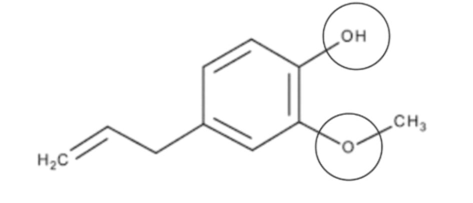
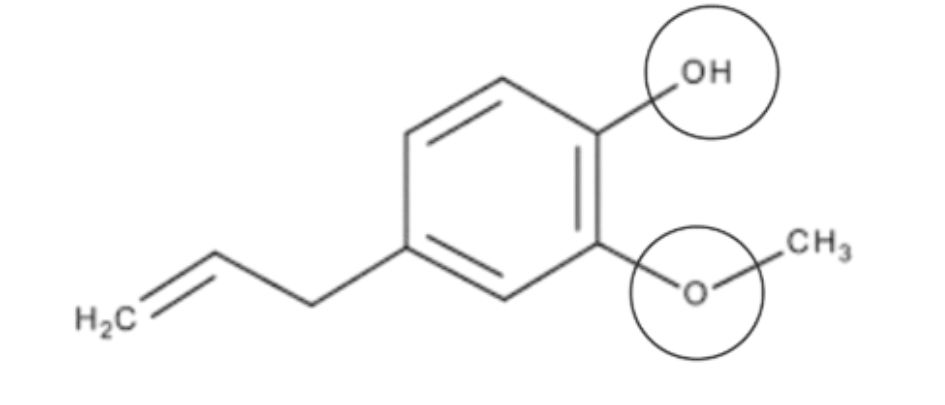
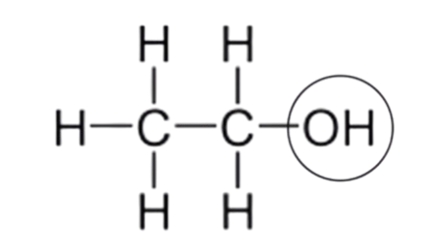

Composição Química
Composição Detalhada do Perfume
Este perfume é composto por uma mistura de essências naturais com funções distintas, todas diluídas em uma base de álcool de cereais. sendo composto por 8 gotas de essencia de cedro, 4 gotas de essencia de laranja e 4 gotas de essencia de canela e 12 gotas de essencia de baunilha.
Laranja (Nota de Topo)
A laranja traz frescor e energia à fragrância. Seus principais compostos sao o
limoneno, pertencente à função dos hidrocarbonetos, e sua formula é C₁₀H₁₆linanol, pertencente à função dos alcoois, e sua formula é C₁₀H₁₈O
mirceno, pertencente à função dos hidrocarboneto, e sua formula é C₁₀H₁₆
Canela (Nota de Base)
A canela traz uma nota quente e envolvente. Seus principais compostos, são
cinamaldeído, pertence à função dos aldeídos aromáticos, sua formula quimica é C₉H₈O
acetato de cinamila, pertence à função dos ester, sua formula quimica é C₁₁H₁₂O₂ eugenol, pertence à função dos fenol, e eter, sua formula quimica é C₁₀H₁₂O₂. 

Cedro (Nota de Base)
O cedro traz uma nota amadeirada e profunda ao perfume. Seus principais compostos são o
cedrol, que pertence aos alcool, sua formula é C₁₅H₂₆O
cedreno, que pertence aos hidrocarbonetos sua formula é C₁₅H₂₄
thujopseno, que pertence aos hidrocarbonetos sua formula é C₁₅H₂₄
Fava de Baunilha (Nota de Base)
A fava de baunilha oferece uma doçura cremosa e envolvente. Seus principais compostos, são
hidroxibenzaldeído, pertence à classe dos aldeídos aromáticos e fenol, sua formula é C₇H₆O₂.
vanilina, pertence à classe dos aldeídos aromáticos, eter e fenol, sua formula é C₈H₈O₃
ácido vanílico, que pertence aos ácidos carboxilicos eter e fenol sua formula é C₈H₈O₄

🧪 Álcool de Cereais (Base do Perfume)
O álcool de cereais, também conhecido como etanol, sua formula quimica é C₂H₅OH ele é a base do perfume e pertence à função dos álcoois. Ele serve para diluir os óleos essenciais, garantindo que a fragrância se espalhe de forma equilibrada e fixe bem na pele.
✨ Juntas, essas substâncias criam uma fragrância única, com notas frescas de laranja, quentes de canela, amadeiradas de cedro e doces de baunilha, resultando em um perfume envolvente e sofisticado.